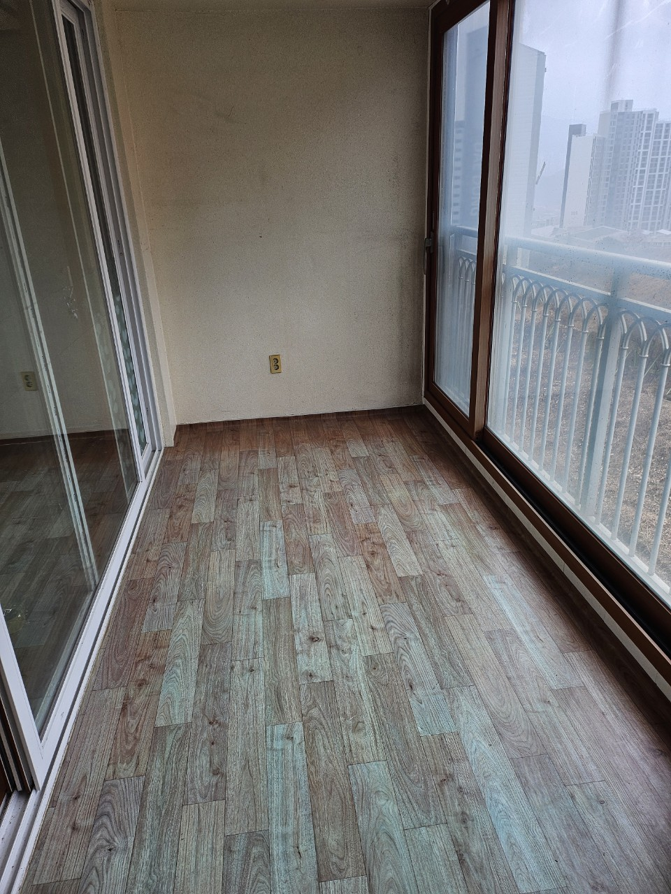

쓰레기집청소
방치된 생활폐기물과 정리하기 어려운 공간을 처리합니다.
화성 지역 방문 가능
화성 쓰레기집청소, 빈집정리, 가정폐기물처리, 이사폐기물처리, 폐업폐기물처리까지 현장 상황에 맞춰 빠르게 상담합니다.

LOCAL SERVICE
화성에서 생활공간이나 사업장을 정리하다 보면 예상보다 많은 폐기물이 발생할 수 있습니다. 오래된 가구, 사용하지 않는 생활용품, 이사 과정에서 나온 짐, 폐업 후 남은 집기류는 혼자 처리하기 어려운 경우가 많습니다.
장기간 방치된 생활폐기물은 악취와 위생 문제를 만들 수 있어 빠른 정리가 중요합니다. 현장 상황에 맞춰 분류, 운반, 상차를 함께 진행합니다.
매매, 임대, 리모델링 전 남아 있는 가구와 생활폐기물을 정리하면 다음 작업이 수월해집니다. 공간 상태와 폐기물 양을 확인한 뒤 작업 방향을 안내합니다.
이사 전후 버릴 물건, 오래된 가구, 생활용품, 대형폐기물 등은 한 번에 정리하는 것이 효율적입니다. 일반폐기물은 30만원부터 시작하며 실제 비용은 양과 현장 조건에 따라 달라집니다.
사무실, 매장, 창고 폐업 후 남은 집기와 폐기물은 종류와 양이 다양합니다. 차량 진입 여부, 층수, 엘리베이터 유무, 분리 작업 난이도에 따라 작업 계획이 달라집니다.
SERVICE
방치된 생활폐기물과 정리하기 어려운 공간을 처리합니다.
비어 있는 집이나 매매·임대 전 공간을 정리합니다.
가구, 생활용품, 대형폐기물을 수거합니다.
이사 전후 불필요한 짐을 한 번에 정리합니다.
업장 정리 후 남은 집기와 폐기물을 처리합니다.
PRICE
일반폐기물은 30만원부터 시작합니다.
정확한 비용은 폐기물 양과 현장 조건 확인 후 안내드립니다.FAQ
일반폐기물은 30만원부터이며 양, 층수, 차량 진입 여부에 따라 달라집니다.
가능합니다. 폐기물 양과 현장 구조를 볼 수 있는 사진이면 좋습니다.
가능합니다. 생활폐기물 정리, 운반, 상차까지 현장 상황에 맞춰 진행합니다.
빠른 상담은 전화 문의가 가장 정확합니다.